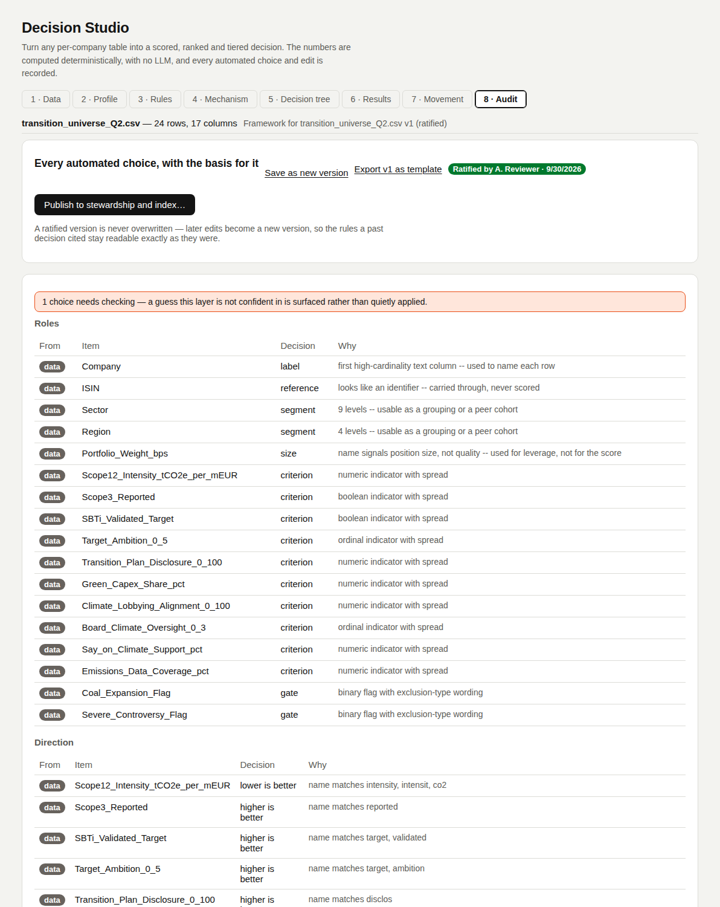

Audit
You decideThe record of every choice, and the actions that fix a framework as a citable version.
One log, two halves
| Origin | Written when |
|---|---|
| derived | The data proposed it: a role, a direction, a grouping, a gate. |
| human | A person changed it. Saving diffs the framework against the version it came from; every difference becomes one entry. Dragging a node is not an edit. |
Each entry: stage, item, decision, why, needs check, origin, who, when.
Stages in the log
Roles · Direction · Peer cohorts · Gates · Dimensions · Weighting · Normalisation · Missing data · Sufficiency · Cut-points · Comparability · Rules · Tier rules · Levels · Overrides · Edit · Import
Actions
| Action | What it does |
|---|---|
| Save as new version | Writes vN+1 with its own audit file. Saving over a ratified version is refused. Also shown above every tab while there are unsaved changes. |
| Ratify version N… | Asks for your name. The version becomes fixed; decisions citing it read it as it is now. |
| Export as template | Downloads one version with its audit trail as arp.decision_template JSON. |
| Publish to stewardship and index… | Only for a ratified version. Freezes its result on this table (see Published tiers). |
Unsaved changes
Ratify, publish and export act on the stored version, so the screen must never look further along than it is.
| Where | What happens |
|---|---|
| Header | Reads (unsaved changes) when the framework on screen differs from the stored version. |
| Ratify, publish, export | Hidden until the changes are saved as a new version. |
| Leaving | Switching table, loading a template, going to another screen or reloading asks first. |
| Node drags | Moving a node on the rule canvas is layout, not an unsaved change. |
Where it is stored
| File | Holds |
|---|---|
frameworks/<id>/vN.json | The framework version. |
vN.audit.json | Derivation and edit trail for that exact version. |
latest.json | Pointer to the newest version. |
A real example, derived from the sample table, edited and ratified: v1.json · v1.audit.json · v2.json (ratified) · v2.audit.json · latest.json. The last four entries of v2.audit.json are the human edits.
In the tool
Screenshots of Decision Studio running on the sample table, taken with the app as it is on main.


Functions applied
What runs at this step, in order, with an example. Blue rows run on GoRules ZEN; the rest is Python in backend/arp/decision/.
| Function | Engine | Example |
|---|---|---|
describe_changes | Python | Minimum coverage 60 → 75 → ('Minimum weight covered (%)', '60 -> 75', origin human, by A. Reviewer) |
DecisionStore.save · new_version · ratify | Python | v1 derived, v2 with four edits, ratified. Saving over v2 → v2 is ratified and cannot be overwritten. Files in example-framework. |
Code and formulas
The formula each function applies, and its source as it is in the repository.
describe_changesbackend/arp/decision/diffing.py:27–86Field-by-field diff of the edited framework against the version it came from; each difference is one origin="human" entry.
Python source (60 lines)
def describe_changes(before: MechanismConfig, after: MechanismConfig, *, by: str | None = None) -> list[AuditEntry]:
"""Every difference between two framework versions, as audit entries
marked `origin="human"`.
This is the other half of the audit log's promise. A derivation trail
alone says what the data suggested; without this, a reviewer cannot
tell which of the rules in front of them a person then changed -- and
that is precisely the distinction the log exists to draw.
"""
entries: list[AuditEntry] = []
for field, label in _SETTING_LABELS.items():
old, new = getattr(before, field, None), getattr(after, field, None)
if old != new:
entries.append(
AuditEntry(
stage="Edit",
item=label,
decision=f"{_render(old)} -> {_render(new)}",
why="changed by hand",
origin="human",
by=by,
)
)
old_veto, new_veto = before.veto, after.veto
if old_veto != new_veto:
entries.append(
AuditEntry(
stage="Edit",
item="Dimension floor",
decision=(
f"{'on' if new_veto.enabled else 'off'}, below {new_veto.min_score:g}, "
f"dimensions with {new_veto.min_criteria}+ criteria"
),
why="changed by hand",
origin="human",
by=by,
)
)
entries.extend(_criteria_changes(before, after, by))
entries.extend(_level_changes(before, after, by))
entries.extend(_dimension_changes(before, after, by))
entries.extend(_gate_changes(before, after, by))
entries.extend(_rule_changes(before, after, by))
entries.extend(_tier_changes(before, after, by))
if before.pinned_cuts != after.pinned_cuts:
entries.append(
AuditEntry(
stage="Edit",
item="Cut-points",
decision=_render(after.pinned_cuts),
why="pinned by hand -- these now survive a re-run against different data",
origin="human",
by=by,
)
)
return entriesDecisionStore.savebackend/arp/storage/decision_store.py:51–63Refuses to overwrite a ratified version; otherwise writes vN.json and vN.audit.json.
Python source (13 lines)
def save(self, config: MechanismConfig, audit: list[AuditEntry] | None = None) -> MechanismConfig:
"""Writes a framework version. Refuses to overwrite a ratified
version: re-deriving a framework is a new version, not a silent
replacement of the one someone signed off."""
existing = self.get(config.framework_id, config.version)
if existing is not None and existing.ratified:
raise ValueError(
f"{config.framework_id} v{config.version} is ratified and cannot be overwritten -- create a new version instead."
)
self._write(config)
if audit is not None:
self.save_audit(config.framework_id, config.version, audit)
return configDecisionStore.new_versionbackend/arp/storage/decision_store.py:65–76version = latest + 1, unratified, with its own audit file.
Python source (12 lines)
def new_version(self, config: MechanismConfig, audit: list[AuditEntry] | None = None) -> MechanismConfig:
"""The only way to change a framework. The previous version stays
exactly as it was, which is what lets a decision taken last quarter
still point at the rules that produced it."""
current = self.get(config.framework_id)
updated = config.model_copy(
update={"version": (current.version + 1) if current else 1, "ratified": False, "ratified_at": None, "ratified_by": None, "created_at": now_iso()}
)
self._write(updated)
if audit is not None:
self.save_audit(updated.framework_id, updated.version, audit)
return updated